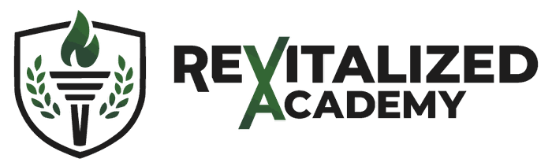

01
Digestive comfort
Notice patterns surrounding recurring digestive discomfort. Prepare clear observations for your coaching conversation.

Vitality RoadmapPrepared for Sample Member
Everyone who completes an eligible free Vitality Roadmap can receive a personally reviewed Roadmap to revisit at no cost. Explore your strengths, areas worth attention and practical starting points. Ongoing coaching is optional.
Eight featured Drivers from this fictional assessment, styled like your printed Roadmap. All twelve remain available to explore.
Illustrative values only. Featured scores come directly from the same twelve sample Drivers shown below. Wise Budgeting has a separate role in the proposed scoring rules.
Rather than trying to change everything, start with the three areas most worth discussing with your coach.
Notice patterns surrounding recurring digestive discomfort. Prepare clear observations for your coaching conversation.
Look at where time for genuine rest may be squeezed out of your existing day.
Start with a repeatable drinking-water routine rather than a complicated overhaul.
Four illustrative focus areas from this same fictional sample. Select an insight to explore its full Driver context.
Daily routines, recovery and digestion often belong in the same conversation. Your coach reviews the complete picture and the original answers before recommending priorities.
Build a short, flexible plan you can revisit with your coach.
Every Driver has its own story. Browse the sample interpretations, see potential strengths and choose useful actions for your plan.
Showing all 12 sample Drivers
No Drivers match this search.
Interpretations, numbers, priority rankings, stages and recommendations on this concept page are fictional or illustrative. The validated answer-to-score mapping and final coach-approved content are not connected.
Choose actions from your Drivers, keep your plan realistic, and use your next coaching conversation to adjust it.
This tracks actions you have tried. It does not change a medical result or your illustrative Driver scores.